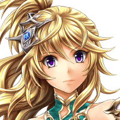

ＳＣＯＵＴ－Ｆ０３
ベクタスノトキト、オナジハンノウガ、 フタリニ、オコッタゾ！！
ティリス
ってことは、 ２人とも召喚の力が戻ったんだね！
レダ
……そうみたい。 まあ、やっぱり完全ではないけどね。
封神狼
我は………そうか……… かの力に……支配されていたのだな……。
封神狼
召喚の力を行使する者どもよ……。 多くは……語らん。
封神狼
本来ならば……貴様らと我は…… 敵対する存在なのだ……。
封神狼
我ら封神儀を……召喚の柱として…… 復活させるつもりならば……急ぐことだ。
封神狼
我らを汚染した力は…… もうすぐ……すべての世界を飲み込む……。
封神狼
そうなれば……どのような存在も…… 滅びの道より……逃れる術はない。
レダ
あなた方を暴走させた力ってこと…？ それって一体……！？
封神狼
本来……我らは……それを封じるため…… 喚び出された……大いなる……大神皇に。
封神狼
貴様らが……その力を解放していくのなら… 再びまみえることも……あろう……。
封神狼
人の子よ……覚醒には至らなかったが…… お前の呼びかけ……我の元に……届いていた
封神狼
それ故に……お前たちを…… 危険に……晒してしまった……。
レダ
私たちの方も、 いろいろわかって来たわね……。
レダ
現在は、本来封じるべきものに 汚染されて暴走している……。
レダ
そして封神儀を汚染した力は、 すべてを飲み込もうとしている……。
ティリス
まったく別の意識が乗っ取っていた ようにも感じたけど……。
レダ
やれやれ……こんな報告したら、 召喚老はどんな顔をするかしらね…？
ルチアナ
………女神ティリス、 一応……お礼は言っておくわ。


ルチアナ
私たちを……守ってくれてありがとう。
ルチアナ
それと……最初に会った時、 突き飛ばしたのは………悪かったわ。
ティリス
だって、友達を守ったり、 傷を治したりするのは、当然のことだよ！
ルチアナ
レダ、あなたたちの世界って、 ティリスみたいな神が沢山いるの？
レダ
今、神々と接点を持っている人間は 少ないから、なんとも言えないわ……。
レダ
人間に味方する神、敵対する神は…… まあ半々ってところね。
レダ
ま、神だからといって、 一様には言えないってことね。
ルチアナ
もし彼女……ティリスみたいな神が ほかにもいるのなら、
ルチアナ
いつか、あなたたちの世界にも 行ってみたいものね……。
カル
グラデンスの爺さんからの連絡だと そうもしてられないようだからな。
バリュオン
俺と対等に話したければ、 相応の力を見せるのだな。
カル
それ以上聞きたければ、 もっと強くなれ……ということか。
カル
分かったよ……。 俺は強くなって戻ってくる。
カル
その時は母さんの話、 もっと聞かせてくれよな。
オーン
フン…… ギリギリ及第点といったところだな……。
セリア
あんたがティリスと海で遊んでいる間、 私はどれだけ腕を上げたかを！
オーン
アイツから言い出したことだ。 修行の仕上げをしてくれとな……。
オーン
大方、グラデンスからの 連絡を受けてのことだろうがな。
？？？
自分の事を認めさせたい相手がいるって 言ってたからね。